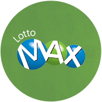

<!--
  Generated template for the LottoTypesPage page.

  See http://ionicframework.com/docs/components/#navigation for more info on
  Ionic pages and navigation.
-->
<ion-header>

  <ion-navbar>
    <button ion-button menuToggle>
      <ion-icon name="menu"></ion-icon>
    </button>
    <ion-title>Lotto Types</ion-title>
  </ion-navbar>
</ion-header>

<ion-content class="card-background-page">

  <ion-grid>
    <ng-container *ngFor="let item of lottoType; let i = index; let even = even;">
      <ion-row *ngIf="even">
        <ion-col col-4 offset-1
          (click) = "viewLottoDetail(item)"
        >
          <ion-card>
            
            <div class="card-title">{{lottoType[i].name}}</div>
            <div class="star-rating">
                <ion-icon *ngFor="let star of lottoType[i].star|times" name="star" color="star-yellow"></ion-icon>
            </div>
            <div class="card-subtitle">{{lottoType[i].listing}} Listings</div>
          </ion-card>
        </ion-col>
        <ion-col col-4 offset-1
          (click) = "viewLottoDetail(item)"
        >
          <ion-card>
            
            <div class="card-title">{{lottoType[i+1].name}}</div>
            <div class="star-rating">
                <ion-icon *ngFor="let star of lottoType[i+1].star|times" name="star" color="star-yellow"></ion-icon>
            </div>
            <div class="card-subtitle">{{lottoType[i+1].listing}} Listings</div>
          </ion-card>
        </ion-col>
      </ion-row>
    </ng-container>
  </ion-grid>
  </ion-content>
